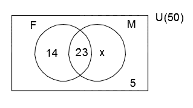
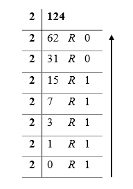
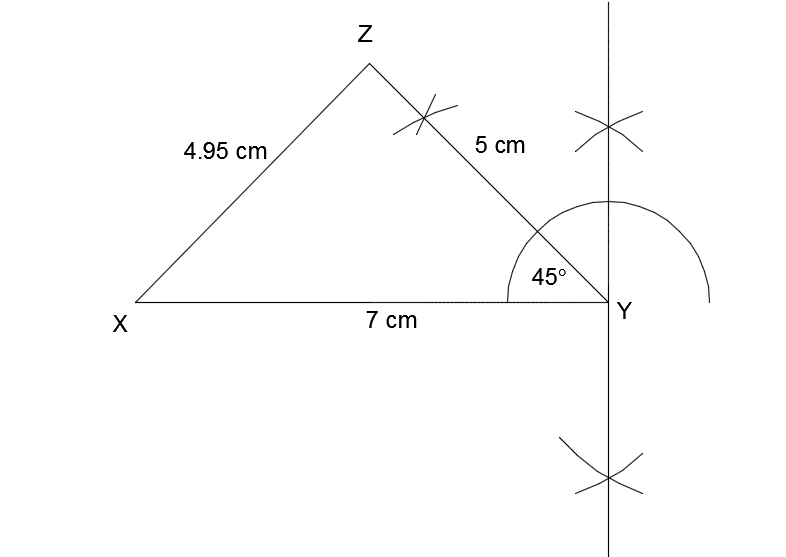
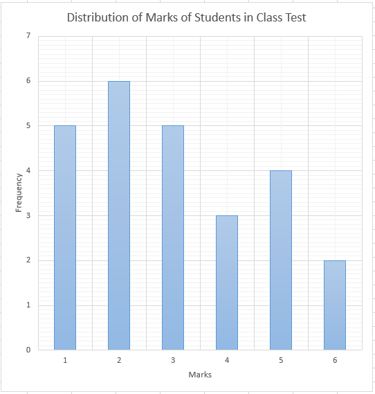
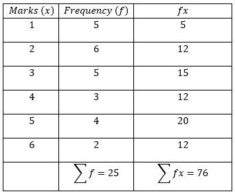
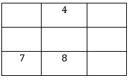
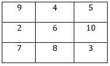
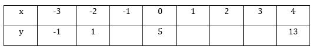
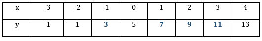
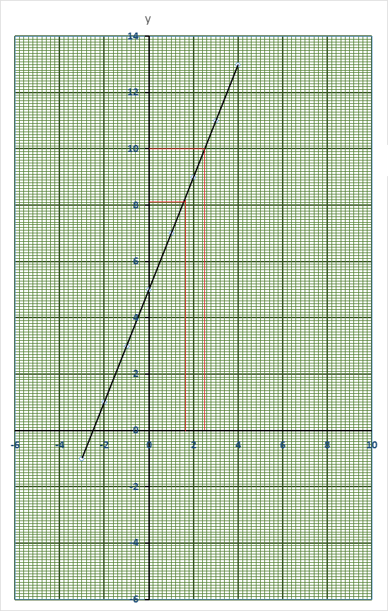

a. Fifty students in a class took an examination in French and Mathematics.
If 14 of them passed French only, 23 passed in both French and Mathematics and
5 of them failed in both subject, find
i. the number of students, who passed French,
ii. the probability of selecting a student who passed in Mathematics.
b. Solve the inequality \(2x - 1\frac{1}{2} \geq 5x - 6 \)
a. Let \(U = \text{\{Students in the class\}} \)
\( \Rightarrow \text{n(U) = 50} \)
Let \(F = \text{\{Students who passed French\}} \)
Let \(M = \text{\{Students who passed Mathematics\}} \)
Let \(x = \text{\{Students who passed Mathematics only\}} \)

i.
Number of students who passed in French,
\( F = 14 + 23 = 37 \)
ii.
\( 14 + 23 + 5 + x = 50 \)
\( \Rightarrow 42 + x = 50 \)
\( \Rightarrow x = 50 - 42 = 8 \)
Number of students who passed in Mathematics,
\( M = 23 + 8 = 31 \)
Probability of selecting a student who passed in Mathematics
\( = \frac{31}{50} \)
b. \( 2x - 1\frac{1}{2} \geq 5x - 6 \)
\( \Rightarrow 2x - \frac{3}{2} \geq 5x - 6 \)
\( \Rightarrow 4x - 3 \geq 10x - 12 \)
\( \Rightarrow 4x - 10x \geq - 12 + 3 \)
\( \Rightarrow -6x \geq 9 \)
\( \Rightarrow x \leq \frac{-9}{-6} \)
\( \Rightarrow x \leq 1\frac{1}{2} \)
a. Convert \({444}_\text{five} \) to a base two numeral.
b. A man had three GHc 50.00, seven GHc 20.00 and five GHc 10.00 notes in his pocket. If he bought a bicycle for GHc 150.00 and two mobile phones at GHc 80.00 each, how many GHc 20.00 and GHc 10.00 notes did he have left?
a. \( (4\times {5}^2) + (4\times{5}^1) + (4\times{5}^0) \\ \Rightarrow (4\times 25) + (4\times 5) + (4\times{1}) \\ \Rightarrow 100 + 20 + 4 \\ = {124}_{\text{ten}} \\ \)  \( \Rightarrow {124}_{\text{10}} = {1111100}_{\text{2}} \)
b. \( \text{Total amount in the man's pocket } \\ = 3 \times \text{GHc 50.00 } + 7\times \text{GHc 20.00 }+ 5\times \text{GHc 10.00 } \\ = 150 + 140 + 50 \\ = \text{GHc 340.00 }\\ \text{Amount spent }= 150 + 2\times 80 \\ = \text{GHc } 310.00 \\ \text{Amount left } = 340 - 310 \\ = \text{GHc } 30.00 \\ \Rightarrow \text{He had } \textbf{ one } \text{ GHc 20.00 and } \textbf{ one } \text{ GHc 10.00 left } \\ \text{ OR } \\ \text{ He had no GHc 20.00 and } \textbf{ three } \text{ GHc 10.00 left.} \)
a. Using a ruler and a pair of compasses only,
i. construct a triangle XYZ with length XY = 7cm, length YZ = 5 cm and angle XYZ = 45\(^{\circ}\).
ii. measure and write down the length of XZ.
b. Given that the circumference of a circle is 44 cm, find
i. the radius of the circle,
ii. the area of the circle.
\( [\text{Take } \pi = \frac{22}{7}] \)

\( \text{ NOT DRAWN TO SCALE } \)
\( a. \\ |XZ| \text{ = 4.95 cm} \approx \text{5.0 cm}
\)
\( b. \\ \text{ i. Circumference of a circle = } 2\pi r = 44 \\
\Rightarrow 2 \times \frac{22}{7} \times r = 44 \\
\Rightarrow r = \frac{44 \times 7}{2 \times 22} \\
\Rightarrow r = 7 cm \\
\\
\text{ii. Area of circle = } \pi {r}^2 \\
= \frac{22}{7} \times 7 \times 7 \\
= 22 \times 7 = \textbf{154 cm}^{2}
\)
The table shows the distribution of marks of students in a class test.
a. Using a graph sheet, draw a bar chart for the distribution.
b. Calculate the mean mark of the distribution correct to the nearest whole number.
a.

b.

\( \text{ Mean } \bar{x} = \frac{\sum fx}{\sum f} = \frac{76}{25} = 3 \frac{1}{25} = 3.04 \approx 3 \)
a. Simplify \( 6(3\frac{5}{6} - 1\frac{3}{4}) \)
b. Copy and complete the magic square so that the sum of numbers in each row or column or diagonal is 18. 
c. Find the sum of all the factors of 24.
d. Given that \( \textbf{m} = \begin{pmatrix} 3 \\ -1 \end{pmatrix} , \textbf{n} = \begin{pmatrix} -1 \\ 2 \end{pmatrix} \text{ and } \textbf{r} = \begin{pmatrix} 18 \\ -6 \end{pmatrix} \)
Find \( \textbf{m + n + r} \)
a.
\( 6(3\frac{5}{6} - 1\frac{1}{4}) \\
= 6(\frac{23}{6} - \frac{5}{4}) \\
= 6(\frac{46-15}{12}) \\
= 6 \times \frac{31}{12} \\
= \frac{31}{2} = 15\frac{1}{2} \)
b.

c.
\( \text{ Factors of 24 = 1, 2, 3, 4, 6, 8, 12, 24 } \\
\text{ Sum of factors of 24 } \\
= 1 + 2 + 3 + 4 + 6 + 8 + 12 + 24 \\
= 60 \)
d.
\( \text{ m + n + r } = \begin{pmatrix} 3 \\ -1 \end{pmatrix} + \begin{pmatrix} -1 \\ 2 \end{pmatrix} + \begin{pmatrix} 18 \\ -6 \end{pmatrix} \\
= \begin{pmatrix} 20 \\ -5 \end{pmatrix} \)
a. Copy and complete the table for the relation \(y = 2x + 5\). 
b.
i. Using a scale of 2 cm to 2 units on both axes, draw two perpendicular axes 0x and 0y on a graph sheet.
ii. Mark the x-axis from -6 to 10 and y-axis from - 6 to 14.
iii. Using the table, plot all the points of the relation \(y = 2x + 5\) on the graph.
iv. Draw a straight line through the points.
c. Use the graph to find
i. y when x = 1.6,
ii. x when y = 10
a.
\( \text{y = 2x + 5 }\\
\text{ when x = -1 } \Rightarrow \text{y = 2(-1) + 5 = 3 } \\
\text{ when x = 1 } \Rightarrow \text{y = 2(1) + 5 = 7 } \\
\text{ when x = 2 } \Rightarrow \text{y = 2(2) + 5 = 9 }\\
\text{ when x = 3 } \Rightarrow \text{y = 2(3) + 5 = 11 } \\
\)

b.

c.
\( \text{From the graph } \\
\text{ when x = 1.6, y = 8.2} \\
\text{ when y = 10, x = 2.5 } \)